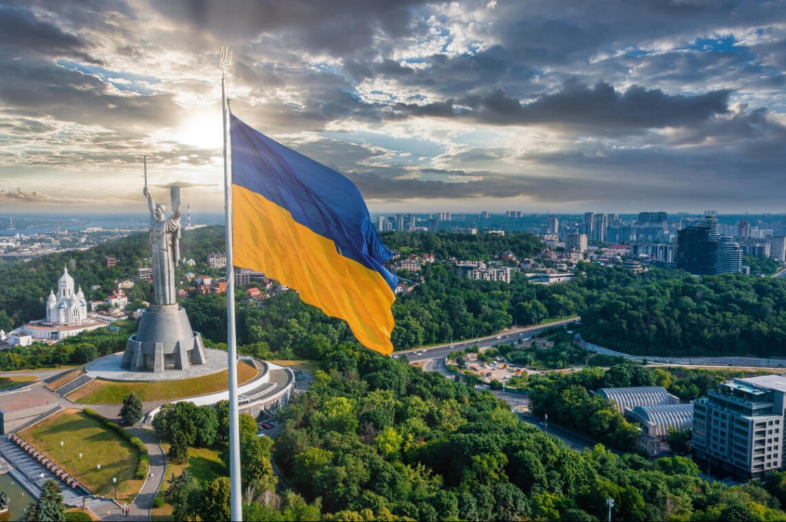

Ukrainian cities

Kyiv (not Kiev!) is a place where the rhythm of history meets a modern urban vibe. Ukrainian capital is a modern city, home to hundreds of successful startups, cultural events and cool venues to meet your every need! And when the sun goes down — rich nightlife gets started! In 2013-2014 Kyiv became the center of the Ukrainian Revolution of Dignity. Images of the Maidan made the front pages of media all across the world.
Kharkiv is the second largest city in Ukraine (after Kyiv, of course). 3/4 century ago it lost its status of the capital of Ukraine (Soviet Ukraine) but we think it has all the chances to get this status back. The population of Kharkov (in October, 2008) was 1 453,1 people. Kharkiv has a rich cultural, scientific, educational, transport and industrial life. City hosts hundreds of industrial companies. Even during the crisis the city is developing. New hotels are being built. Transport system of Kharkov is one of the best in Ukraine. During preparation to Euro 2012, city government repaired many roads and changed some of marshrutka on central streets to make the traffic less heavy. Kharkiv metro is 35 km long and has 28 stations. There were new fast trains laucnhed to connect major cities of Ukraine (Kyiv, Donetsk, Lviv).

This Southern city has a lot of nicknames. ‘The Sea pearl of Ukraine’ is, perhaps, the most popular one. And Odesa (not Odessa!) shines — day and night! Here you’ll find 19th century architecture rubbing shoulders with a unique urban city flavor. Talented sense of humor trenches here upon the real everyday wisdom. For starters, visit ‘Privoz’ which is the main city market. Go to the fish stall or the old shopping stalls, and be ready to listen, see and remember.

Lviv had been called ‘truly European’ long before the Ukrainian official Eurointegration path started. Amazing architecture, trams, a myriad of coffee flavors, bars with home-made liqueurs. A city bursting at the seams with cultural life. Some Ukrainians move here seeking new inspiration. And you know what? They find it! Once part of the Habsburg monarchy (they called it Lemberg), Lviv became